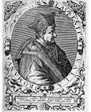
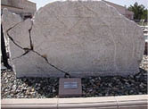
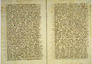
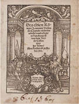

Vasiyetin Sahteliği Bilimsel Anlamda Kanıtlanıyor
“Konstantin’in Bağışı” belgesi, yüzlerce yıla yayılan bir süreçte, gerçekliğini tartışmaya açanların canına mal olup Hıristiyanlık âleminin önce Ortodoks ve Katolik olarak bölünmesine yol açtı. Bu belgenin sahte olduğunun ortaya çıkması ise Papaların tartışılmaz iktidarına ve Katolik Kilisesi’nin yozlaşmışlığına bir “protest” hareketi olarak başladığı için Protestan adını alan yeni bölünme, üçüncü bir mezhebe meşruiyet sağlayacaktı.
Roma Kilisesi’ni tüm Kiliselerin bağlı olduğu yetki makamı ve Başpatriği (Piskopos) Papaları salt müminlerin değil, devlet egemenlerinin üstünde karar mercii, Hıristiyan âleminin önderi kılan kutsal yapılanma, Büyük Konstantin’in vasiyeti olduğu iddia edilen bu tek belgeye dayanıyordu. Papalar ve Papalık Devleti’nin kurucu yasası, kullandığı tüm egemenlik haklarının, yetkilerin meşruiyet temeli, bu vasiyetten ibaretti.

Lorenzo Valla
Ve Donatio Constantini diye anılan vasiyetin, Büyük Konstantin öldükten yüzyıllar sonra yazılmış sahte bir belge olduğunu kanıtlamak, İtalyan dil bilgini Lorenzo Valla’ya37 “kısmet” oldu.
1407 Roma doğumlu Lorenzo Valla, Yunanca ve Latince uzmanı bir dilbilimciydi. Bu uzmanlığı Roma Üniversitesi’nde kazandıktan sonra, Padova Üniversitesi’nde de söz sanatı ve felsefe eğitimi görmüştü.
Diplomat olmak istiyordu, ama diplomasi mesleği, ancak Papalık Devleti memuriyetinde mümkündü. Valla, memur olmak için yaptığı iki girişim reddedilince Padova, Napoli ve Roma üniversitelerinde ders vermeye başladı.
Hümanizm akımının sıkı bir temsilcisi olarak, daha ilk çalışmalarından öteye dil ve eğitimde reformu savundu, savunduğunun doğruluğunu da ömrü boyunca yaptığı tüm çalışmalarda kusursuz iş etiğiyle kanıtladı.
Engin dil bilgisine dayalı ilk ünü ve elbette düşmanları, zamanın en şöhretli Roma hukukçusu Bartolo da Sassoferrato’nun yoz Latincesine dair yaptığı kıyasıya ama sağlam eleştiriyle kazandı.
Uyduruk Latincesiyle bilgiçlik taslayan, devletlere yasa tasarıları falan yazan kendini beğenmiş Sassoferrato’nun; Rossini’nin Sevil Berberi ve Mozart’ın Figaro’nun Düğünü operalarına kibirli ve katı Dr. Bartolo karakteriyle yansıdığını söylersem, kendisini eleştiren genç bilginin hangi duvara çarptığı daha iyi anlaşılır. Lorenzo Valla, üniversiteden atılır.
Ama her kapanan kapı karşılığında bir kapı açılır ya; 1433 yılında Napoli Kralı Alfonso’nun hizmetine girer, özel sekreteri olur.
Yeni görevi, Lorenzo Valla’ya Katolik Kilisesi’nin kurucu metinleri üzerinde araştırma yapmak olanağı vermektedir.
Dil bilgini, önce kutsal “Resullerin Akitleri” kitabının, bizzat Resuller tarafından yazılmadığını ortaya çıkarır. Bu çalışması Valla’yı engizisyon yargıçlarının pençesine sürükler, ancak Napoli kralının himayesiyle paçayı kurtarır.
Ama uslanmaz.
Başta, “İsa’nın Urfa Kralı Abgar’a mektubu”38 özgün sanılan pek çok kutsal metnin, sahte olduklarını kanıtlar. Bu metinlerin genellikle muhafaza edilip (zaten üretildiği de) din yuvaları, Hıristiyanca yaşamın “ideallik” abidesi, ahlaklı kültür temsiliyeti manastırlardır. Sahte olduklarının ortaya çıkması, manastırlardaki yaşam modelinin “ideal Hıristiyan” imgesini sarsmış, tartışmaya açmıştı.
Napoli Kralı Alfonso’nun, Lorenzo Valla’yı himayesine almasının perde arkasında, elbette Papa’nın devletlerüstü iktidarına karşı giriş-

İsa’nın Urfalı Abgar’a sahte mektup kitabesi
tiği mücadele vardı. Dil bilgini Valla, bu mücadelede kralının elini güçlendirmek için sorunun temeline inmeye karar verdi.

Lorenzo Valla’nın elyazısıyla orijinal bildirisinden bir sayfa,
Vatikan arşivleri
Papaların, hükümdarlar ve devletler üstünde iddia ettiği iktidar yetkisi (potestas) neye dayanıyordu?
Kısaca “Konstantin’in Bağışı” diye anılan, Constitutum Domni Constantini Imperatoris başlıklı uzun vasiyet metnine...
Hümanist Valla, Papaların hükümdarların üzerindeki hüküm yetkisi ve Papalık Devleti’nin anayasası kabul edilen ama özgünlüğü uzun süredir tartışılan vasiyet metni üzerinde çalışmaya başladı.
1440 yılında bitirdiği araştırma sonuçlarını, “Konstantin’in sahte ve yalan bağışına dair Bildiri”39 başlığı altında toplayıp Napoli kralına sundu.

Lorenzo Valla’nın “Konstantin’in
sahte ve yalan bağışına dair
bildiri”sinin Almanca baskısı
Lorenzo Valla, ilerleyen yıllarda dilbilime “tarihsel metot” diye adlandırılan araştırma yöntemini kazandıran bu son derece titiz çalışmasında; içerdiği tarihe aykırılıkların (anakronizma) incelemesinden yola çıkarak, vasiyet metnin sahteliğini sarsılmaz bir mantıkla kanıtlıyordu.
Nasıl mı?
Burada ayrıntılara girmek, kuşkusuz sıkıcı olur.
Ama birkaç örnekle, kısaca özetleyebilirim:
Latince kaleme alınan vasiyet metninde, Büyük Konstantin’in ağzından, Roma ili ve İtalya’daki tüm eyaletlerin iktidar yetkilerini Papa Silvestro’ya bırakarak Doğu eyaleti Bizantium’a çekildiği ve bundan böyle kendisine uygun gördüğü bu yerde bir kent kurarak, emperyal iktidarını Doğu’da sürdüreceği açıklanıyordu.
Görünüşte, Doğu’ya çekilme kararını alan imparatorun, Batı Roma’yı tümüyle Papa’nın iktidarına bırakması mantıklıydı.
Ama Lorenzo Valla’nın kuşkularını uyandıran da tam bu mantıktı.
Çünkü bu açıklamanın devamında Büyük Konstantin’in, Papa’nın “Başlıca dört patriklik makamı Antakya, İskenderiye, Konstantinopolis, Kudüs ve dahi Tanrı’nın dünyadaki tüm diğer kiliselerinin üstünde öncül önderliğini kanun ilan eyledik,” emri yer alıyordu.
Lorenzo Valla ise herkesin görüp de görmezden geldiğini gösteriyor ve sorguluyordu:
“Doğu’ya çekilip Byzantion eyaletinde bir kent kuracağından söz eden İmparator, henüz kurmadığı ve zaten adını da vermediği yeni kentin, ölümünden sonra Konstantinopolis adını alacağını, ölmeden önce nereden bilir? Var olmayan Patriklik makamından nasıl söz edebilir?”
İtiraz edilemeyecek bir çıkarsamaydı bu.
İmparator Büyük Konstantin, 337 yılında ölmüştü. Roma’nın Byzantium eyaletinde kurduğu yeni başkenti Nova Roma, kendisininin ölümünden sonra Konstantinopolis adını almıştı. Konstantinopolis Patrikhanesi ise ancak 381 yılında kurulmuştu. Bu durumda, Büyük Konstantin’in ölümünden, yani 337 yılından önce yazıldığı söylenen bir metinde nasıl olur da Konstantinopolis ve Konstantinopolis Patriklik makamı yer alırdı?
Vasiyetin bir başka tümcesi, Büyük Konstantin’in, “Tüm Satraplarımıza ve Senatomuza, soylularımıza ve dahi Roma halkına ve İmparatorluğumuzun haşmetine boyun eğenlere dair yararlı bulduk ki,” sözleriyle başlıyordu.
Lorenzo Valla, bu tümceyi şöyle eleştiriyordu:
“Bre sahtekâr, bre cahil! Satrapların bu tümcede ne işi var? Sezarlar böyle mi konuşur? Ey odun kafa, ey taş kafa! Roma kanunları böyle mi yazılır? Ne Roma meclisinde, zaten ne de bir Roma eyaletinde Satrap mı olur?”
Gerçekten de Satrap, Farsçada vali demek olup, Pers İmparatorluğu eyalet yöneticilerine verilen isimdi.
Vasiyet metnini böyle kelime kelime, satır satır takvim tarihleriyle karşılaştırarak, Büyük Konstantin’in ölümünden önce yazıldığı iddiasını çökerten Lorenzo Valla’nın çalışması, Papa’nın hükümdarlar üstünde yetki makamı olduğu iddiasını çürütmeye yönelikti. Ama Valla, “Konstantin’in Bağışı” belgesinin sahteliğini kanıtlarken, Papa’nın Hıristiyan âlemine ruhani önderliğini asla konu etmemişti.
Oysa Papalık Devleti’nin kurucu yasası bu belgenin sahteliğinin kanıtlanmasının doğal sonucu, Papalık makamının tüm yetkilerinin yok sayılması olmalıydı. Lorenzo Valla’nın, metin üzerindeki çalışmasında Papalık makamını tartışmaya açmaması, ilerleyen zamanlarda Roma Kilise iktidarına karşı çıkan reform yanlıları tarafından şiddetle eleştirildi.
Ne var ki Lorenzo Valla’nın niyeti Papalığı yıkmak değil, Kilise’nin genelinde dürüst olmasını sağlamak, özelinde devletlerin ve hükümdarların üzerinde yetkisini kaldırıp iktidarını ruhani alanla sınırlamaktı.
Zaten “Konstantin’in Bağışı” üzerine yazdığı bildiriyi de 1442’deki ekümenik din kurultayı, Floransa Konsili’ne sunmak amacıyla hazırlamıştı.
Bildiri elbette Floransa Konsili’nde okunmadı. Roma Apostolik Kilisesi, onun sahteliğini kanıtlamakla yetindiği vasiyetin “yokluğu”nun nereye varacağını gayet iyi görmüştü!
Lorenzo Valla, daha 26 yaşındayken yazdığı De Voluptate ac vero bono (Zevke Dair) üç ciltlik eseriyle, yoksunluğa ve yasaklara dayalı din eğitimini hümanist açıdan mahkûm ettiğinden yoğun bir husumetin odağındaydı. Özgün sanılan kutsal metinler üstüne bir de “Konstantin’in Bağışı”nın sahte olduğunu kanıtlamasıyla öylesine çok düşman edindi ki, 1444 yılında Roma’ya yaptığı bir yolculukta kendisini linç etmek isteyenlerin elinden kılık değiştirerek kaçıp kurtulabildi.
Doğruyu söyleyenin dokuz köyden kovulduğu deyişini haklı çıkaran Valla’nın kaderi, 1447’de hümanist aydın Beşinci Nicolas’nın Papa seçilmesiyle değişti.
Kilise’nin modernleşmesi gerektiğine inanan yeni Papa, çektiği yıldırımlara rağmen uzmanlık değeri kimse tarafından inkâr edilemeyen Lorenzo Valla’yı “apostolik kâtip” ünvanıyla Roma hükümeti (curia) memurluğuna atadı. Antik Yunan tarihçileri Herodotos ve Thukydides’in eserlerini Latinceye çevirmekle görevlendirdi.
Latince ile Yunancaya karşılıklı hâkimiyetinin yanı sıra felsefe ve tarih bilgisi, Lorenzo Valla’yı zamanın en büyük dil bilgini kılıyordu. Antik Yunan filozofların eserlerini çevirmekle kalmadı, Latince üstüne altı ciltlik bir başyapıt yazdı. Bu başyapıtla, Ortaçağ Avrupası’nın Antik Çağ’a göre ne kadar gerilemiş olduğunu ortaya koyuyordu.
“Özgür İrade” anlamına gelen De libero arbitrio adlı eserinde, özgür akıl ile ilahî emir arasındaki çatışmanın kaçınılmaz ve çözümsüz olduğunu ortaya koydu. Bu yapıtta öne sürdüğü tüm fikirler, seksen yıl sonra Protestan mezhebinin kurucu babası Martin Luther tarafından harfi harfine benimsenecek ve Lorenzo Valla, Protestanlık tarihinin bir kahramanı sayılacaktı.
Hümanist bilgin Valla, 1457 yılında, “Konstantin’in Sahte ve Yalan Bağışına dair Bildiri”sinin yayımlandığını göremeden öldü.
Ama Hıristiyanlığın başkenti olarak kurulan Konstantinopolis’in Osmanlı Sultanı tarafından fethini ve burçlarından indirilen Haç’ın yerini Hilal’in alışını yaşadı. Ömrünün kırk altıncı yılına denk gelen bu fethin, Ortaçağ’ı bitirip Yeniçağ’ı açacağını öngörmüş müydü, bilinmez.
Bu büyük entelektüelin henüz 50 yaşında sonsuzluğa uğurlanmasından iki yıl önce, insan uygarlığını derinden biçimleyecek bir devrim başlamıştı: Gutenberg mobil (oynak) harfli matbaasını kurmuş ve ilk kitap olarak, Vulgate diye anılan Latince İncil’i basmıştı.
Lorenzo Valla’nın 1440 yılında yazımını bitirdiği “Konstantin’in Sahte ve Yalan Bağışına Dair Bildiri” adlı incelemesinin matbaadaki ilk baskısı, ölümünden yarım yüzyıl sonra,1506 yılında yapıldı.
Kitapların hem hızlı hem de çok miktarda yayımlanıp yayılmasını sağlayan söz konusu baskı tekniğinden öteye, dünyada artık hiçbir şey eskisi gibi olmayacaktı. Kilise ve ruhban sınıfının tekelindeki bilgi, baraj kapakları açılmış güçlü bir nehir gibi gürül gürül çağlayarak akacak, ulaştığı kitleleri düşünmeye zorlayacak, insanları kutsallık adına aldatıp sömürmek, belki daha da zorlaşacaktı.
Kutsal metinlere eleştirel bakışın geliştiği ve bilimsel buluşların birbirini izleyeceği Aydınlanma başlıyordu.
Yeniçağ, din ile bilim arasındaki çelişkinin ilk kez açıkça ortaya döküleceği bir süreçti.
37 Adın İtalyanca aslı, Lorenzo della Vale’dir. Latincede Laurentius Valla olarak geçer. Yaygın söylemi, iki dilin karışımı Lorenzo Valla biçimindedir.
38 Bu kitap yazılırken, 2013 yılına kadar Türkiye’de Çorum Müzesi bahçesinde kitabe biçiminde sergilenen bu sahte mektubun, Şanlıurfa Müzesi’ne verilmesi için girişim başlatılmıştı.
39 Latince orijinali, De falso credito et ementita constantini donatione declamatio’dur.